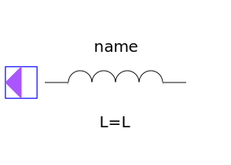

This Package contains the basic components of the SPICE3 models. The first letter of the
name of the component shows the SPICE name, e.g., R_Resistor: R is the SPICE-name of the component
resistor which is used in SPICE-Netlists.
| Name | Description |
|---|---|
| Ground node | |
| Ideal linear electrical resistor | |
| Ideal linear electrical capacitor | |
|  L_Inductor | Ideal linear electrical inductor |
| Inductive coupling via coupling factor K | |
| E_VCV | Linear voltage-controlled voltage source |
| Linear voltage-controlled current source | |
| H_CCV | Linear current-controlled voltage source |
| Linear current-controlled current source |